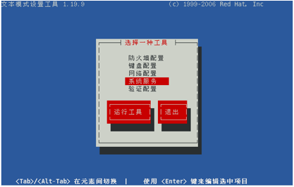
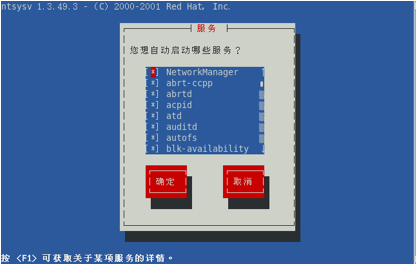

用户可以设置某项服务开机启动或者关闭，有图形界面和命令两种方式
一、图形界面
1、在终端输入命令setup，在弹出的界面选择“系统服务”

2、也可以直接在终端输入命令“ntsysv”，得到如下界面

3、通过空格来修改开启或者关闭，上下左右键移动，tab键回到“确定”或者“取消”，回车确认。
二、命令方式
1、通过命令“chkconfig”来设置服务的默认启动或者关闭状态，该命令的用法如下
|
命令 |
说明 |
|
chkconfig --list |
查看所有服务的启动状态 |
|
chkconfig _list 服务名 |
查看指定服务的启动状态 |
|
chkconfig _add 服务名 |
增加指定的服务 |
|
chkconfig _del 服务名 |
删除指定的服务 |
|
chkconfig _level num(0~6) 服务名 on/off |
设置指定服务在某个level的启动状态 |
2、查看所有服务的启动状态
|
|
3、以nfs服务为例，查看该服务在每个level的启动状态
|
|
4、设置nfs服务在level5开机启动，并查看结果
|
|
5、每个level的意义
|
level |
说明 |
|
0 |
关机 |
|
1 |
单用户模式 |
|
2 |
多用户命令模式，无网络 |
|
3 |
多用户命令模式，有网络 |
|
4 |
保留 |
|
5 |
图形界面的多用户模式 |
|
6 |
重启 |